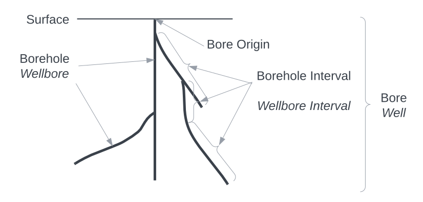
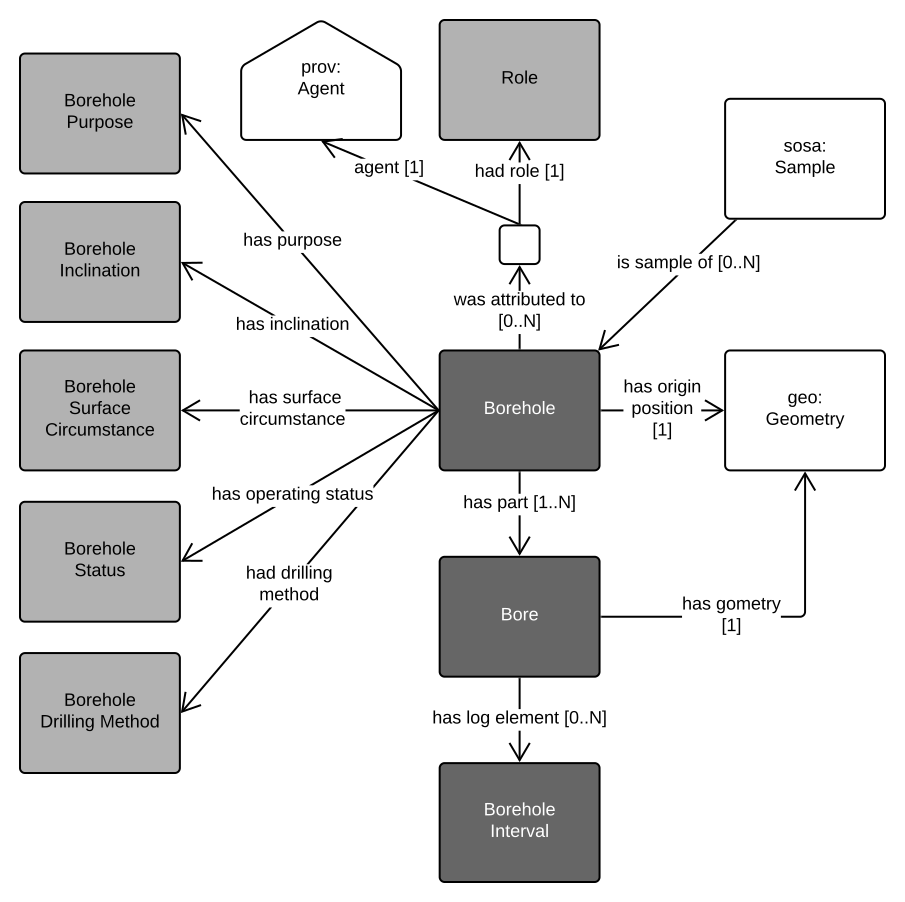

Bores Model
{kind=link}

This model describes physical, functional and operational aspects of Bores, sometimes known as Wells.
This Model is a formally-defined profile which is multi-part standard that includes a specification, schema, data validators, supporting vocabularies and a few other things. Also, this model profiles other standards, that is it inherits and depends on elements of other standards. Data created conforming to this profile will conform to the standards this model profiles.
The comprehensive listing of the various parts of this profile are given in the Profile Definition section, below.
The Semantic Web model component of this profile, it's schema, is published online at a persistent web location:
Profile Definition
Is Profile Of
This profile is a specialisation of - a constraining of - several existing Standards, some of which are about bores/boreholes and some of which are about more fundamental concepts relevant to bores, such as spatiality and sampling. Specifically, this profile is an interpretation of GeoSciML's non-Semantic Web Boreholes model in Semantic Web form, with alignments to GeoSPARQL a general-purpose spatial Semantic Web standard and SOSA, a general Semantic Web standard for sampling features & systems. An intermediate standard is also used: the FSDF Backbone Model, which profiles GeoSPARQL and SOSA and ensures that all objects conforming to it work well with the Australian Foundational Spatial Data Framework.
The things this profile is a profile of - the things it constrains and is dependent on - as stated above, are shown graphically, in Figure BH below.
{kind=link}

Resources
This Profile is made of many resources, all of which are contained in, or linked to from, this document. The resources and their roles are:
| Resource | Role |
|---|---|
| Profile Definition | defines this set of resources - this table and text above |
| Specification | specification defines the profile elements in human-readable form |
| Schema | schema machine-readable version of the Specification's elements This is the Semantic Web model within this profile, online at https://linked.data.gov.au/def/borehole |
| Validator | validation machine-executable rules to test data for conformance to this Profile |
| Compounded Validator | validation this profile's validator & those of all dependencies in one |
| Vocabularies | vocabulary defines terms used in the profile specification |
| Examples | example valid and invalid data files |
| Code Repository | repository an online repository storing all of this Profile's resources |
Specification
This Specification is the normative statement of requirements for data to conform to this Profile. This Specification is human-readable - this document - and does not provide either a formal model schema or data validators: those are provided for by the schema and validator resources listed in the Resources Section above and described below.
Introduction
This profile is all about "bores", which are sometimes known by other names, such as "wells" or "drillholes" or even "boreholes", however in this model, "bore" is the overall thing and "borehole" is only a part. The concepts and relationships in this specification and in this Profile generally are not dependent on particular labels, and they may be used interchangeably, according to the equivalences given in the class definitions below in the Classes Section: see the preferred and alternate labels for the classes.
Figure BC shows some major physical elements of a borehole that this profile caters for, as well as some of the alternative names for them, in italics.
This Specification defines data classes and properties that can be used to describe boreholes in line with the concepts of the Figure above. The classes and properties are defined in a following section after the total model which uses them is introduced next.
Model
Knowledge Graph data models define data classes with properties and, sometimes axioms which are logical rules that are applied to class and properties. This model, so far, only defines a few classes and properties for them, no axioms.
The Figure BO below is a classes and properties diagram (formally, an OWL diagram) of the major components of this profile's model. Where they match, the names of the classes in this Figure link them to the elements in the Concepts, Figure BC above.
The Key for the elements in this Figure is the figure key for this Supermodel.
{kind=link}

Namespaces
Namespaces provide unique identity to elements within this Profile - classes, properties, validation shapes and example data. Prefixes for namespaces are used to assist with documentation readability.
Where you see a prefix used, something like xxx:, it is to be replaced with the namespace for complete term definition. For example, using the table below, we can understand that bh:Bore is equivalent to http://linked.data.gov.au/def/borehole/Bore.
The following prefixed namespaces are used in class and property definition tables and the code examples following:
| Prefix | Namespace | Description |
|---|---|---|
ex: |
http://example.com/ |
Generic, non-resolvable, examples |
bh: |
http://linked.data.gov.au/def/borehole/ |
This profile's schema/model |
bsp: |
http://linked.data.gov.au/def/borehole-start-point/ |
Borehole Start Point vocabulary, managed by the Geological Survey of Queensland |
dcat: |
http://www.w3.org/ns/dcat# |
Data Catalogue vocabulary: cataloguing international standard |
dcterms |
http://purl.org/dc/terms/ |
Dublin Core Terms: basic library catalogue-style metadata |
geo: |
http://www.opengis.net/ont/geosparql# |
GeoSPARQL: Semantic Web spatial international standard |
prov: |
http://www.w3.org/ns/prov# |
Provenance Ontology: provenance data structures international standard |
rdfs: |
http://www.w3.org/2000/01/rdf-schema# |
RDF Schema vocabulary: Basic structural RDF elements |
skos: |
http://www.w3.org/2004/02/skos/core# |
Simple Knowledge Organization System: a model for controlled vocabularies |
These namespaces appear at the start of RDF data files and SPARQL query files in a form similar to this table, for example in E.g. 01 , you can see the prefix bhfor the Bores namespace on the first line: PREFIX bh: <https://linked.data.gov.au/def/borehole/>.
Classes
Bore
| Property | Value |
|---|---|
| IRI | bh:Bore |
| Name | Bore |
| Alternate Name | Well, Drillhole |
| Description | A borehole is a narrow shaft, or set of shafts, bored in the ground with a common point of origin. A borehole may be constructed for many different purposes, including the extraction of water, other liquids (such as petroleum) or gases (such as natural gas), as part of a geotechnical investigation, environmental site assessment, mineral exploration, temperature measurement, as a pilot hole for installing piers or underground utilities, for geothermal installations, or for underground storage of unwanted substances, e.g. in carbon capture and storage. |
| Expected Properties | has origin position has geometry - used to indicate the geometry of the Bore has part - for linking to Borehole objects) was attributed to - for linking to Agent objects, via Attribution objects classification properties, e.g. has purpose |
| History Note | This definition for a Bore is derived from of GeoSciML's definition for Borehole, however it is altered to cater for multi-shaft Bores/Wells. This is achieved by making Bore a container class for one of more Borehole objects which represent the individual shafts. |
ex:bh-01
a bh:Bore ;
bh:hasOriginPosition [
geo:asWKT "POINT (153.083340 -27.325458)"^^geo:wktLiteral ;
] ;
bh:hasSurfaceCircumstance bsp:natural-ground-surface ;
prov:wasAttributedTo [
prov:agent <https://orcid.org/0000-0002-8742-7730> ;
dcat:hadRole ex:driller ;
] ;
# other properties such as links to Bores
.
This example shows a borehole, ex:bh-01, with an origin position at longitude 153.083340 E & latitude 27.325458 S, a surface circumstance taken from a Geological Survey of Queensland vocabulary ("natural ground surface") and there's an attribution of the borehole to an Agent: Nicholas Car, identified by an IRI, with the role of driller.
Bore
| Property | Value |
|---|---|
| IRI | bh:Bore |
| Name | Borehole |
| Alternate Name | Wellbore |
| Description | A Bore is an individual shaft drilled into the ground. |
| Scope Note | A Bore is not the overall Bore or Well object but a distinct part of it. Every Borehole must be presented in relation to a Bore. |
| Expected Properties | has geometry - used to indicate the geometry of the Borehole, perhaps as a LineString or a Polygon has part - for linking to Borehole Interval objects) |
| History Note | This definition for a Bore is derived from of GeoSciML's definition for Borehole. Borehole is the class assigned to represent an individual shaft whereas Bore has been made a container class that contains one or more Borehole objects. This is to cater for multi-shaft Bores which are common in some industries, for example petroleum exploration where Bores are referred to as Wells and Boreholes as Wellbores. |
ex:bh-01
a bh:Bore ;
dcterms:hasPart
ex:b-01 ,
ex:b-02 ;
.
ex:b-01
a bh:Borehole ;
geo:hasGeometry [
geo:asWKT "LINESTRING (...)"^^geo:wktLiteral
] ;
.
Borehole Interval
| Property | Value |
|---|---|
| IRI | bh:BoreholeInterval |
| Name | Borehole Interval |
| Alternate Name | Wellbore Interval |
| Description | Coming... |
| Example |
Properties
has origin position
| Property | Value |
|---|---|
| IRI | bh:hasOriginPosition |
| Name | has origin position |
| Description | Coming... |
| Domain | Bore |
| Example |
has log element
| Property | Value |
|---|---|
| IRI | bh:hasLogElement |
| Name | has log element |
| Description | Coming... |
| Example |
has purpose
| Property | Value |
|---|---|
| IRI | bh:hasPurpose |
| Name | has purpose |
| Description | Coming... |
| Example |
has inclination
| Property | Value |
|---|---|
| IRI | bh:hasInclination |
| Name | has inclination |
| Description | Coming... |
| Example |
has surface circumstances
| Property | Value |
|---|---|
| IRI | bh:hasSurfaceCircumstances |
| Name | has surface circumstances |
| Description | Coming... |
| Example |
has status
| Property | Value |
|---|---|
| IRI | bh:hasStatus |
| Name | has status |
| Description | Coming... |
| Example |
had drilling method
| Property | Value |
|---|---|
| IRI | bh:hadDrillingMethod |
| Name | had drilling method |
| Description | Coming... |
| Example |
has vertical reference
| Property | Value |
|---|---|
| IRI | bh:haVerticalReference |
| Name | has vertical reference |
| Range | A skos:Concept from the Depth Reference vocabulary |
| Description | Coming... |
| Example |
Schema
Validators
To prove that data conforms to this Profile, it must be validated. Since all the expected data for this Profile is RDF data, SHACL validation may be used. SHACL is a constraints language providing machine-executable rul formulation for RDF.
This Profile presents its own validator which only includes tests for the rules specific to this profile and not those of the things this Profile is dependent on. However, a compounded validator is also given below which includes this Profile’s validator and all the dependent ones.
The validator for this Profile's rules is available in machine-readable form here:
The individual rules tested for by the validator are given in the next subsection.
The compounded validator that includes all the rules within this profile's validator and all those from Standards and other Profiles that this profile is dependent on is available in machine-redable format here:
Technical specification of the validation tool and help on how to perform automated validation are given in the Validation Tools subsection below.
Rules
These are the rules checked for by this profile's validator. They are referenced by identifier in the machine-readable validator above so that validation messages are able to be linked to these rules.
Tools
Coming...
Vocabularies
This section lists the vocabularies that the Bores Model indicates for use. Some of these vocabularies are defined elsewhere - by other organisations and within standards - so this listing indicates how each is managed.
| Vocabulary | Profile access point | Managing Organisation |
|---|---|---|
| Borehole Configuration in preparation |
range value of has inclination |
GSWA |
| Borehole Drilling Method extension of CGI's Borehole Drilling Method |
range value of has drilling method |
GSWA / CGI |
| Borehole Geometry in preparation |
so far unknown | GSWA |
| Borehole Purpose | range value of has purpose |
GSQ |
| Borehole Status | range value of has status |
GSWA |
| Borehole start point setting derived from Borehole Start Point |
range value of has surface circumstances |
GSWA / GSQ |
| Borehole Type | range value of type for Borehole class |
GSWA |
Examples
This section presents complete (valid, according to this profile) RDF data examples. The first is compounded from the snippet examples from the Specification Section above.
E.g. 01
ex:bh-01
a bh:Bore ;
prov:wasAttributedTo [
a prov:Attribution ;
dcat:hadRole ex:driller ;
prov:agent <https://orcid.org/0000-0002-8742-7730>
] ;
bh:hasOriginPosition [
a geo:Geometry ;
geo:asWKT "POINT (153.083340 -27.325458)"^^geo:wktLiteral
] ;
bh:hasSurfaceCircumstance bsp:natural-ground-surface ;
.
<https://orcid.org/0000-0002-8742-7730>
a sdo:Person ;
sdo:email "nick@kurrawong.ai"^^xsd:anyURI ;
sdo:name "Nicholas J. Car"@en ;
.
Code Repository
While a copy of all Bores Model resources are contained within the repository for the GSWA Supermodel, the home location of this profile is: